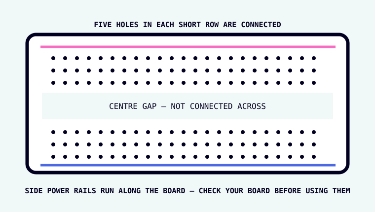
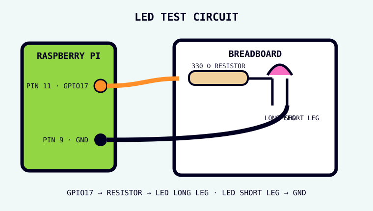
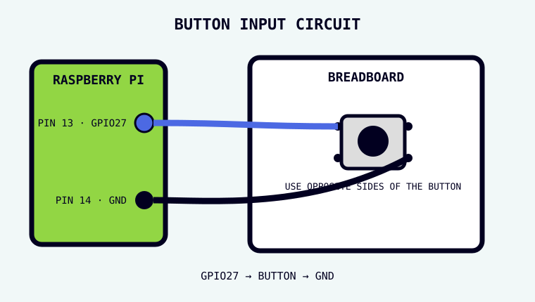
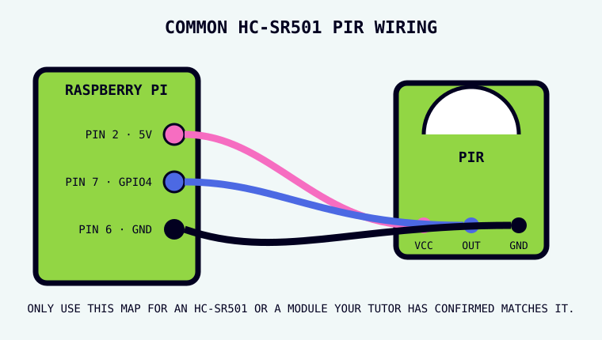
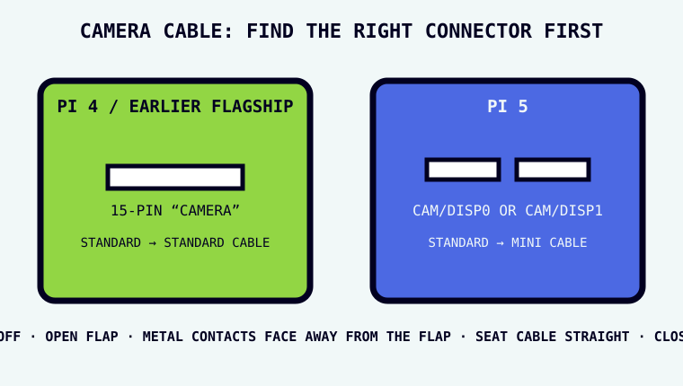

Learn the part before the project
You do not need to memorise every component. You need to know what question to ask when you pick one up.
Breadboard

What is it? A reusable board for building circuits without solder.
How do you recognise it? A plastic board covered in a grid of small holes, usually with a long gap down the middle.
What is connected? Short groups of holes are joined underneath. The centre gap separates the two sides. Long side rails may be connected along their length, but some boards split them.
Good for: testing circuits, changing parts quickly, learning.
Jumper wires
What are they? Reusable wires with plug ends designed for header pins and breadboards.
Male → male
Pin on both ends. Useful breadboard-to-breadboard.
Female → male
Socket on one end, pin on the other. Useful GPIO-header-to-breadboard.
Female → female
Socket on both ends. Useful between exposed header pins.
LED
Full name: light-emitting diode.

Resistor
What is it? A component that resists current flow.
Pushbutton

What is it? A momentary switch: it changes the electrical connection only while it is pressed.
Input or output? Input.
Four legs? On a common tactile button, the two legs on one side are already joined internally. Pressing the button connects that side to the opposite side.
Useful for: start buttons, choices, triggers, simple controls.
PIR motion sensor

Full name: passive infrared sensor.
What does it notice? Changes in infrared energy. A warm body moving across its view often creates that change.
Input or output? Input.
Common labels: VCC = power, OUT = signal to the Pi, GND = ground.
Useful for: automatic lights, occupancy detection, wildlife cameras, Lucky Cam.
Raspberry Pi camera module

What is it? A camera sensor and lens that sends image data to the Pi through a flat ribbon cable.
Input or output? Input: it captures light and turns it into image data.
Connection? Camera ribbon connector, not the GPIO header.
Important: Pi 4 and earlier flagship boards use the standard 15-pin connector; Pi 5 uses a smaller 22-pin connector and needs the appropriate cable.
Useful for: photos, video, timelapse, machine vision, Cat Cam.
Buzzer
What is it? A component that converts an electrical signal into sound.
Servo motor
What is it? A motor with position control. Instead of simply spinning, a hobby servo can move its arm to a requested angle.
Ultrasonic distance sensor
What is it? A sensor that sends a burst of sound above human hearing and measures how long the echo takes to return.
Potentiometer
What is it? An adjustable resistor, usually controlled by a knob or slider.
Analogue? Analogue means the value can change across many levels, not just ON/OFF.
Choose by job, not by tutorial
Button
PIR
LED
Camera